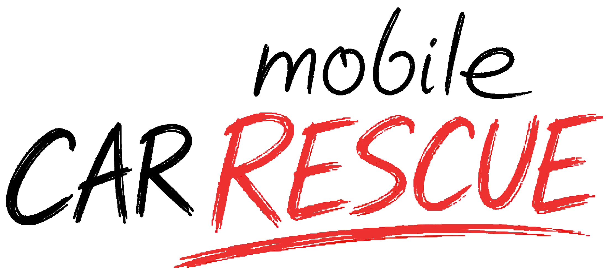
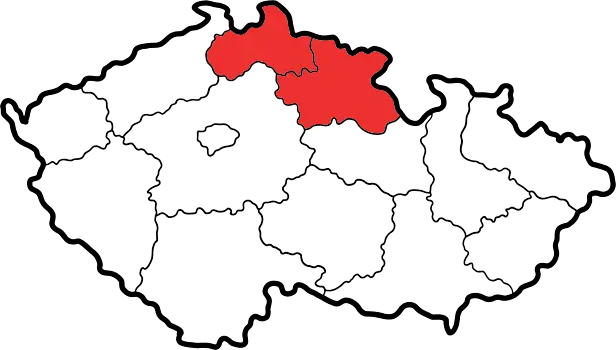
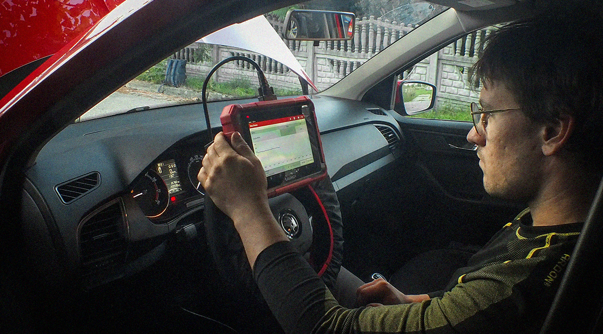
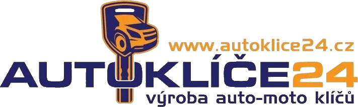

Servisní práce
Servisní a opravárenské práce přímo u zákazníka. Mobilní servis umožňuje provést řadu běžných oprav a údržby vozidla bez nutnosti návštěvy klasického autoservisu.

736 140 887Jsme mobilní autoservis působící v Královéhradeckém a Libereckém kraji. Ať už Vás vozidlo zradilo na cestách, nebo potřebujete běžný servis, obraťte se na nás.

Poradíme si se vším. Sjednejte si opravu ještě dnes!
Servisní a opravárenské práce přímo u zákazníka. Mobilní servis umožňuje provést řadu běžných oprav a údržby vozidla bez nutnosti návštěvy klasického autoservisu.
Mechanické opravy vozidel přímo u zákazníka. Podle charakteru závady je možné řadu oprav vyřešit na místě bez nutnosti převozu vozidla do klasického autoservisu.

Diagnostika a opravy elektrických a elektronických systémů vozidel přímo u zákazníka za použití profesionálního diagnostického a měřicího vybavení.
Profesionální diagnostika vozidel přímo u zákazníka s využitím specializovaného diagnostického a měřicího vybavení.
Výměny a montáže autoskel přímo u zákazníka podle typu vozidla a konkrétního provedení skla.
Přehledný ceník orientačních cen za nejčastější práce.
Spokojenost našich zákazníků je pro nás hlavní prioritou.
Skvělý přístup, co slíbil to udělal, termín, servis, převzetí a odevzdání vozu, vše v pohodě, což dnes není zdaleka běžné. Zbývá jen poděkovat.
Jiří HofmanNaprostá spokojenost ve všech ohledech!
Matěj PaděraFrajer je nejspolehlivější mechanik široko daleko. Jak řekne, tak bude. Poradí si snad se vším a i cenově je úplně normální. Velmi doporučuju !!
Josef ŠkumátPodívejte se jak to může vypadat přímo v akci.
Můžete se s námi spojit kdykoliv, kvůli čemukoliv.
V zátiší 458, 543 03 Vrchlabí, Podhůří

Provádím servisní a opravárenské práce přímo u zákazníka. Mobilní servis umožňuje provést řadu běžných oprav a údržby vozidla bez nutnosti návštěvy klasického autoservisu.
Servis a opravy provádím podle technických postupů a s ohledem na konkrétní typ a stav vozidla.
Provádím mechanické opravy vozidel přímo u zákazníka. Podle charakteru závady je možné řadu oprav vyřešit na místě bez nutnosti převozu vozidla do klasického autoservisu.
Před samotnou opravou se snažím nejprve přesně určit příčinu závady, aby se zbytečně neměnily díly, které jsou v pořádku.
Provádím diagnostiku a opravy elektrických a elektronických systémů vozidel přímo u zákazníka za použití profesionálního diagnostického a měřicího vybavení.
Cílem je závadu přesně lokalizovat, určit její příčinu a navrhnout nebo provést odpovídající opravu.
Provádím profesionální diagnostiku vozidel přímo u zákazníka s využitím specializovaného diagnostického a měřicího vybavení.
Cílem není pouze vyčíst chybový kód, ale závadu správně diagnostikovat a určit její skutečnou příčinu.
Provádím výměny a montáže autoskel přímo u zákazníka podle typu vozidla a konkrétního provedení skla.
Montáž provádím s důrazem na správné usazení skla, těsnost a bezpečnost vozidla.